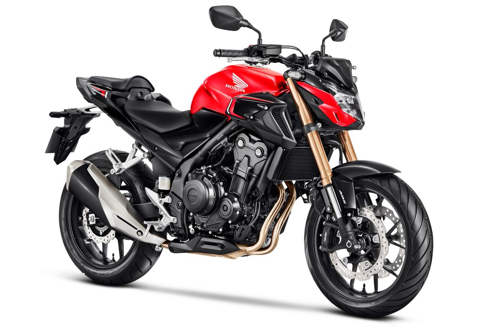
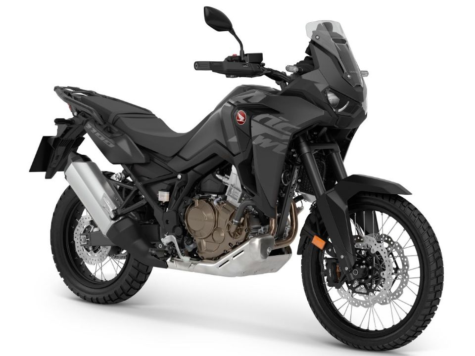
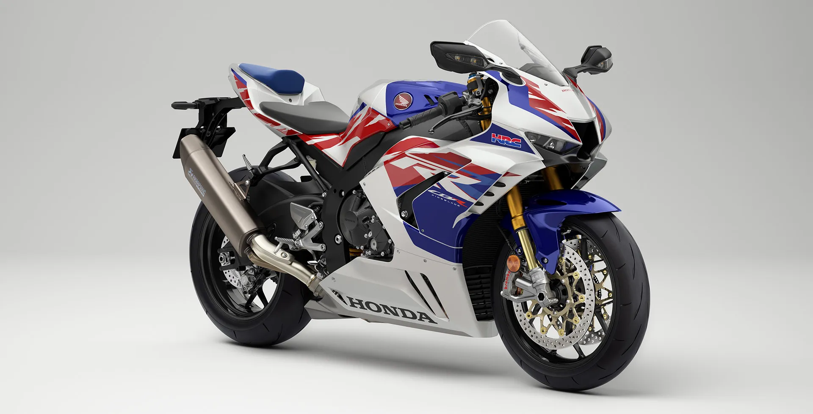
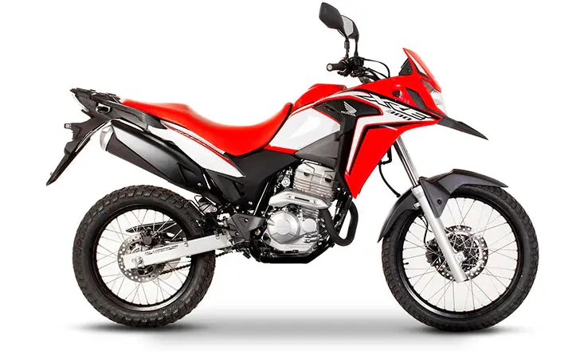
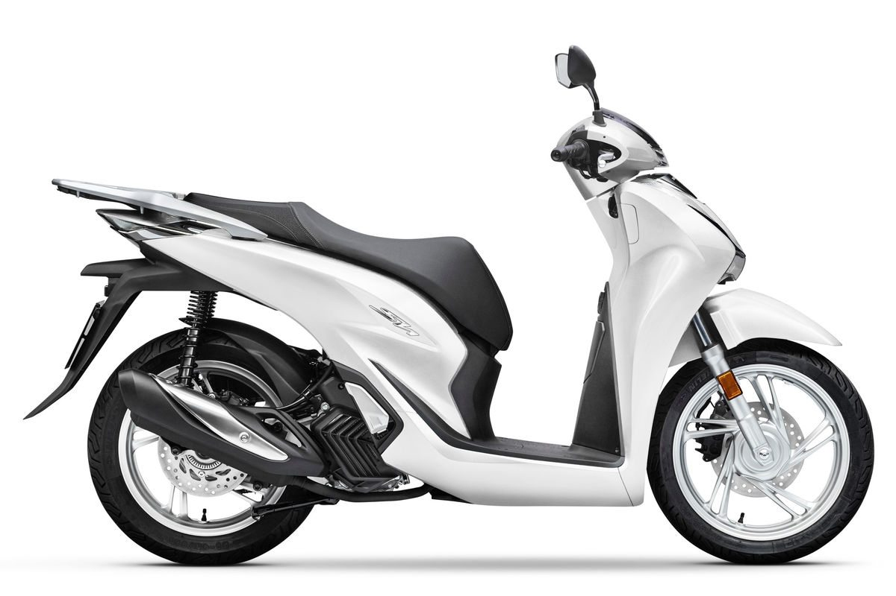

| Modelo | Ano | Descrição | Imagem |
| Honda CB 500F | 2024 | A Honda CB 500F é uma naked bike projetada para ser ágil e acessível. Com um motor de dois cilindros de 471 cc, oferece uma potência moderada e um design moderno. A versão 2024 inclui atualizações no sistema de freios ABS e um painel digital completo. Ideal para quem busca uma moto versátil tanto para o uso urbano quanto em estradas. |  |
| Honda CRF 1100L Africa Twin | 2023 | A Africa Twin é uma motocicleta aventureira e robusta, preparada para longas viagens e terrenos difíceis. Seu motor bicilíndrico de 1084 cc é forte o suficiente para oferecer uma boa resposta em várias condições. O modelo 2023 tem tecnologia de controle de torque, modos de pilotagem e suspensões ajustáveis eletronicamente, ideal para entusiastas de viagens de aventura. |  |
| Honda CBR 1000RR-R Fireblade SP | 2022 | Esta é uma das superbikes mais potentes da Honda, com um motor de 999 cc, 214 cv e eletrônica avançada que inclui controle de tração, modos de pilotagem e freios com pinças Brembo. A Fireblade é inspirada nas pistas de corrida e é construída para alta performance. O modelo 2022 trouxe aprimoramentos na aerodinâmica e um painel digital aprimorado. |  |
| Honda XRE 300 | 2024 | A XRE 300 é uma motocicleta on/off-road bastante conhecida no Brasil. É equipada com motor monocilíndrico de 291,6 cc e tem uma proposta voltada para versatilidade, sendo uma ótima escolha tanto para rodar na cidade quanto em terrenos acidentados. O modelo 2024 traz melhorias no design e no sistema de injeção eletrônica, aumentando sua eficiência e conforto. |  |
| Honda SH 150i | 2023 | A SH 150i é um scooter de porte médio, com um motor de 150 cc, que oferece agilidade e economia para deslocamentos urbanos. Seu design moderno e seus recursos, como o Smart Key, ABS nas rodas dianteira e traseira e iluminação em LED, tornam essa moto uma opção bastante confortável e prática para o dia a dia. O modelo 2023 também prioriza baixo consumo de combustível e ergonomia. |  |